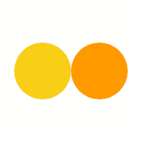

<!DOCTYPE html>
<html lang="en">
<head>
    <meta http-equiv="X-UA-Compatible" content="IE=edge">
    <meta charset="UTF-8">
    <meta name="viewport" content="width=device-width, initial-scale=1.0">
    <link href="images/onlyLogo.png" rel="shortcut icon" type="image/x-icon" />
    <title>Custom Fiori Launchpad-task</title>
    <style>
      /* .gifLoading {
            display: flex;
            justify-content: center;
            align-items: center;
            background: white;
        }

        .bgColor {
            background: white;
            overflow: hidden;
        } */
        /* #mainIdcontent{
          display: none;
          opacity: 1;
        } */
        html, body, body > div, #container, #container-uiarea {
            height: 100%;
          
        }
    </style>

    <script
        id="sap-ui-bootstrap"
        src="https://sapui5.hana.ondemand.com/resources/sap-ui-core.js"
        data-sap-ui-theme="sap_horizon"
        data-sap-ui-resourceroots='{
            "sap.ad.advlauchpad": "./"
        }'
        data-sap-ui-oninit="module:sap/ui/core/ComponentSupport"
        data-sap-ui-compatVersion="edge"
        data-sap-ui-async="true"
        data-sap-ui-frameOptions="trusted"
    ></script>
    <script>
    //    sap.ui.getCore().attachInit(function () {
    //     new sap.ui.core.BusyIndicator.show()
        
    //    })
   
    </script>
    <!-- please do not change anything -->
   
</head>
<body class="sapUiBody sapUiSizeCompact" id="content">
  <!-- <div class="gifLoading" id="gif">
    
</div> -->
    <div id="mainIdcontent"
        data-sap-ui-component
        data-name="sap.ad.advlauchpad"
        data-id="container"
        data-settings='{"id" : "sap.ad.advlauchpad"}'
        data-handle-validation="true"
    ></div>
</body>

</html>